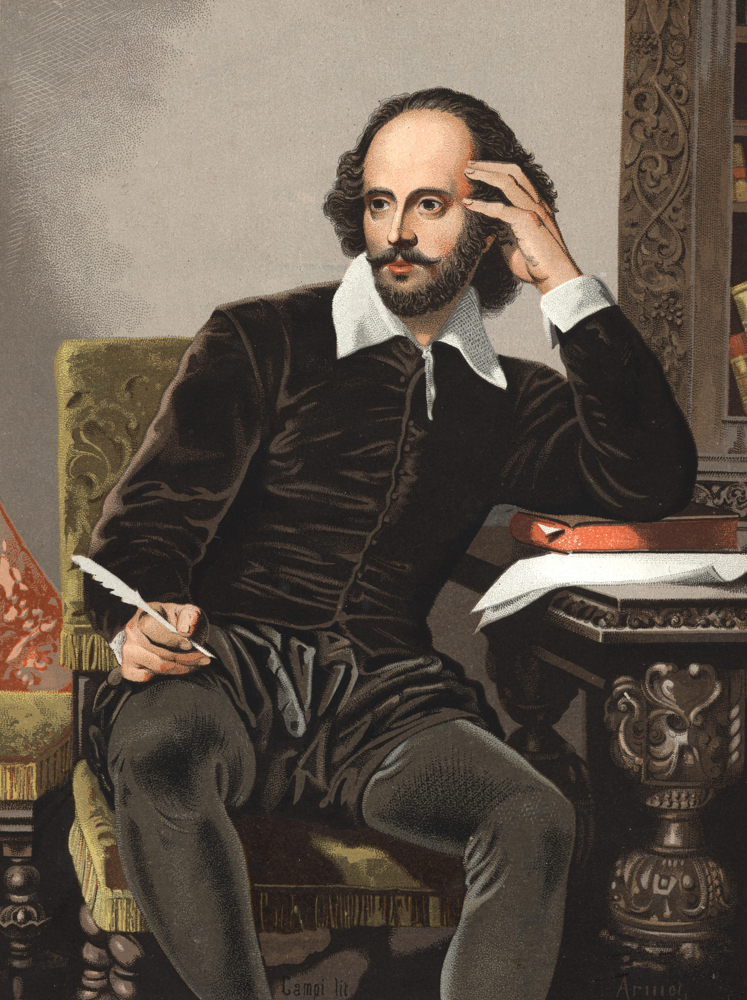
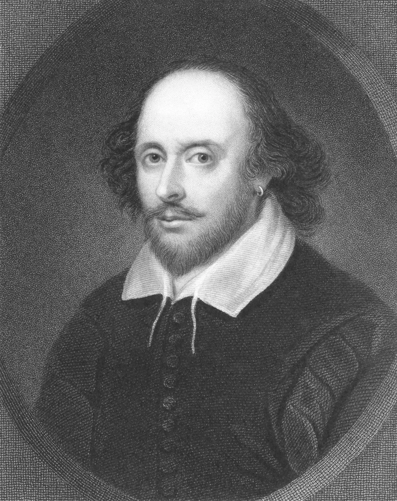

Gallery



The Bard of Avon (1564 - 1616)
William Shakespeare was an English playwright, poet, and actor, widely regarded as the greatest writer in the English language and the world's greatest dramatist. He is often called England's national poet and the "Bard of Avon".
His works consist of about 39 plays, 154 sonnets, and two long narrative poems. His plays have been translated into every major living language and are performed more often than those of any other playwright.